산업안전기사 (2022-03-05 기출문제)
1과목: 안전관리론
1. 산업안전보건법령상 산업안전보건위원회의 구성·운영에 관한 설명 중 틀린 것은?
- 정기회의는 분기마다 소집한다.
- 위원장은 위원 중에서 호선(互選)한다.
- 근로자대표가 지명하는 명예산업안전감독관은 근로자 위원에 속한다.
- 공사금액 100억원 이상의 건설업의 경우 산업안전보건위원회를 구성·운영해야 한다.
(정답률: 59%)

2. 산업안전보건법령상 잠함(潛函) 또는 잠수 작업 등 높은 기압에서 작업하는 근로자의 근로시간 기준은?
- 1일 6시간, 1주 32시간 초과금지
- 1일 6시간, 1주 34시간 초과금지
- 1일 8시간, 1주 32시간 초과금지
- 1일 8시간, 1주 34시간 초과금지
(정답률: 66%)
3. 산업현장에서 재해 발생 시 조치 순서로 옳은 것은?
- 긴급처리 → 재해조사 → 원인분석 → 대책수립
- 긴급처리 → 원인분석 → 대책수립 → 재해조사
- 재해조사 → 원인분석 → 대책수립 → 긴급처리
- 재해조사 → 대책수립 → 원인분석 → 긴급처리
(정답률: 81%)
4. 산업재해보험적용근로자 1000명인 플라스틱 제조 사업장에서 작업 중 재해 5건이 발생하엿고, 1명이 사망하였을 때 이 사업장의 사망만인율은?
- 2
- 5
- 10
- 20
(정답률: 53%)
5. 안전·보건 교육계획 수립 시 고려사항 중 틀린 것은?
- 필요한 정보를 수집한다.
- 현장의 의견을 고려하지 않는다.
- 지도안은 교육대상을 고려하여 작성한다.
- 법령에 의한 교육에만 그치지 않아야 한다.
(정답률: 88%)
6. 학습지도의 형태 중 몇 사람의 전문가가 주제에 대한 견해를 발표하고 참가자로 하여금 의견을 내거나 질문을 하게 하는 토의방식은?
- 포럼(Forum)
- 심포지엄(Symposium)
- 버즈세션(Buzz session)
- 자유토의법(Free discussion method)
(정답률: 75%)
7. 산업안전보건법령상 근로자 안전보건교육 대상에 따른 교육시간 기준 중 틀린 것은? (단, 상시작업이며, 일용근로자는 제외한다.)
- 특별교육 – 16시간 이상
- 채용 시 교육 – 8시간 이상
- 작업내용 변경 시 교육 – 2시간 이상
- 사무직 종사 근로자 정기교육 – 매분기 1시간 이상
(정답률: 72%)
8. 버드(Bird)의 신 도미노이론 5단계에 해당하지 않는 것은?
- 제어부족(관리)
- 직접원인(징후)
- 간접원인(평가)
- 기본원인(기원)
(정답률: 55%)
9. 재해예방의 4원칙에 해당하지 않는 것은?
- 예방가능의 원칙
- 손실우연의 원칙
- 원인연계의 원칙
- 재해 연쇄성의 원칙
(정답률: 74%)
10. 안전점검을 점검시기에 따라 구분할 때 다음에서 설명하는 안전점검은?
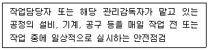
- 정기점검
- 수시점검
- 특별점검
- 임시점검
(정답률: 79%)
11. 타일러(Tyler)의 교육과정 중 학습경험선정의 원리에 해당하는 것은?
- 기회의 원리
- 계속성의 원리
- 계열성의 원리
- 통합성의 원리
(정답률: 54%)
12. 주의(Attention)의 특성에 관한 설명 중 틀린 것은?
- 고도의 주의는 장시간 지속하기 어렵다.
- 한 지점에 주의를 집중하면 다른 곳의 주의는 약해진다.
- 최고의 주의 집중은 의식의 과잉 상태에서 가능하다.
- 여러 자극을 지각할 때 소수의 현란한 자극에 선택적 주의를 기울이는 경향이 있다.
(정답률: 82%)
13. 산업재해보상보험법령상 보험급여의 종류가 아닌 것은?
- 장례비
- 간병급여
- 직업재활급여
- 생산손실비용
(정답률: 76%)
14. 산업안전보건법령상 그림과 같은 기본 모형이 나타내는 안전·보건표시의 표시사항으로 옳은 것은? (단, L은 안전·보건표시를 인식할 수 있거나 인식해야 할 안전거리를 말한다.)
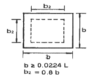
- 금지
- 경고
- 지시
- 안내
(정답률: 60%)
15. 기업내의 계층별 교육훈련 중 주로 관리감독자를 교육대상자로 하며 작업을 가르치는 능력, 작업방법을 개선하는 기능 등을 교육 내용으로 하는 기업 내 정형교육은?
- TWI(Training Within Industry)
- ATT(American Telephone Telegram)
- MTP(Management Training Program)
- ATP(Administration Training Program)
(정답률: 71%)
16. 사회행동의 기본 형태가 아닌 것은?
- 모방
- 대립
- 도피
- 협력
(정답률: 43%)
17. 위험예지훈련의 문제해결 4라운드에 해당하지 않는 것은?
- 현상파악
- 본질추구
- 대책수립
- 원인결정
(정답률: 69%)
18. 바이오리듬(생체리듬)에 관한 설명 중 틀린 것은?
- 안정기(+)와 불안정기(-)의 교차점을 위험일이라 한다.
- 감성적 리듬은 33일을 주기로 반복하며, 주의력, 예감 등과 관련되어 있다.
- 지성적 리듬은 “I”로 표시하며 사고력과 관련이 있다.
- 육체적 리듬은 신체적 컨디션의 율동적 발현, 즉 식욕·활동력 등과 밀접한 관계를 갖는다.
(정답률: 68%)
19. 운동의 시지각(착각현상) 중 자동운동이 발생하기 쉬운 조건에 해당하지 않는 것은?
- 광점이 작은 것
- 대상이 단순한 것
- 광의 강도가 큰 것
- 시야의 다른 부분이 어두운 것
(정답률: 55%)
20. 보호구 안전인증 고시상 안전인증 방독마스크의 정화통 종류와 외부 측면의 표시 색이 잘못 연결된 것은?
- 할로겐용 - 회색
- 황화수소용 - 회색
- 암모니아용 - 회색
- 시안화수소용 - 회색
(정답률: 61%)
2과목: 인간공학 및 시스템안전공학
21. 인간공학적 연구에 사용되는 기준 척도의 요건 중 다음 설명에 해당하는 것은?
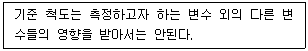
- 신뢰성
- 적절성
- 검출성
- 무오염성
(정답률: 68%)
22. 그림과 같은 시스템에서 부품 A, B, C, D의 신뢰도가 모두 r로 동일할 때 이 시스템의 신뢰도는?
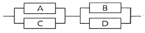
- r(2-r2)
- r2(2-r)2
- r2(2-r2)
- r2(2-r)
(정답률: 60%)
23. 서브시스템 분석에 사용되는 분석방법으로 시스템 수명주기에서 ㉠에 들어갈 위험분석기법은?
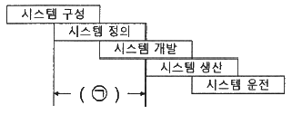
- PHA
- FHA
- FTA
- ETA
(정답률: 45%)
24. 정신적 작업 부하에 관한 생리적 척도에 해당하지 않는 것은?
- 근전도
- 뇌파도
- 부정맥 지수
- 점멸융합주파수
(정답률: 56%)
25. A사의 안전관리자는 자사 화학 설비의 안전성 평가를 실시하고 있다. 그 중 제2단계인 정성적 평가를 진행하기 위하여 평가 항목을 설계단계 대상과 운전관계 대상으로 분류하였을 때 설계관계 항목이 아닌 것은?
- 건조물
- 공장 내 배치
- 입지조건
- 원재료, 중간제품
(정답률: 69%)
26. 불(Boole) 대수의 관계식으로 틀린 것은?
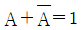
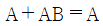
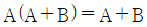
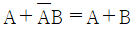
(정답률: 50%)
27. 인간공학의 목표와 거리가 가장 먼 것은?
- 사고 감소
- 생산성 증대
- 안전성 향상
- 근골격계질환 증가
(정답률: 76%)
28. 통화이해도 척도로서 통화 이해도에 영향을 주는 잡음의 영향을 추정하는 지수는?
- 명료도 지수
- 통화 간섭 수준
- 이해도 점수
- 통화 공진 수준
(정답률: 55%)
29. 예비위험분석(PHA)에서 식별된 사고의 범주가 아닌 것은?
- 중대(critical)
- 한계적(marginal)
- 파국적(catastrophic)
- 수용가능(acceptable)
(정답률: 58%)
30. 어떤 결함수를 분석하여 minimal cut set을 구한 결과 다음과 같았다. 각 기본사상의 발생확률은 qi, i = 1, 2, 3라 할 때, 정상사상의 발생확률함수로 맞는 것은?
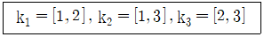
- q1q2 + q1q2 - q2q3
- q1q2 + q1q3 - q2q3
- q1q2 + q1q3 + q2q3 - q1q2q3
- q1q2 + q1q3 + q2q3 - 2q1q2q3
(정답률: 58%)
31. 반사경 없이 모든 방향으로 빛을 발하는 점광원에서 3m 떨어진 곳의 조도가 300lux라면 2m 떨어진 곳에서 조도(lux)는?
- 375
- 675
- 875
- 975
(정답률: 62%)
32. 근골격계부담작업의 범위 및 유해요인조사 방법에 관한 고시상 근골격계부담작업에 해당하지 않는 것은? (단, 상시작업을 기준으로 한다.)
- 하루에 10회 이상 25kg 이상의 물체를 드는 작업
- 하루에 총 2시간 이상 쪼그리고 앉거나 무릎을 굽힌 자세에서 이루어지는 작업
- 하루에 총 2시간 이상 시간당 5회 이상 손 또는 무릎을 사용하여 반복적으로 충격을 가하는 작업
- 하루에 4시간 이상 집중적으로 자료입력 등을 위해 키보드 또는 마우스를 조작하는 작업
(정답률: 53%)
33. 시각적 식별에 영향을 주는 각 요소에 대한 설명 중 틀린 것은?
- 조도는 광원의 세기를 말한다.
- 휘도는 단위 면적당 표면에 반사 또는 방출되는 광량을 말한다.
- 반사율은 물체의 표면에 도달하는 조도와 광도의 비를 말한다.
- 광도 대비란 표적의 광도와 배경의 광도의 차이를 배경 광도로 나눈 값을 말한다.
(정답률: 43%)
34. 부품 배치의 원칙 중 기능적으로 관련된 부품들을 모아서 배치한다는 원칙은?
- 중요성의 원칙
- 사용 빈도의 원칙
- 사용 순서의 원칙
- 기능별 배치의 원칙
(정답률: 75%)
35. HAZOP 분석기법의 장점이 아닌 것은?
- 학습 및 적용이 쉽다.
- 기법 적용에 큰 전문성을 요구하지 않는다.
- 짧은 시간에 저렴한 비용으로 분석이 가능하다.
- 다양한 관점을 가진 팀 단위 수행이 가능하다.
(정답률: 47%)
36. 태양광이 내리쬐지 않는 옥내의 습구흑구 온도지수(WBGT) 산출 식은?
- 0.6 × 자연습구온도 + 0.3 × 흑구온도
- 0.7 × 자연습구온도 + 0.3 × 흑구온도
- 0.6 × 자연습구온도 + 0.4 × 흑구온도
- 0.7 × 자연습구온도 + 0.4 × 흑구온도
(정답률: 63%)
37. FTA에서 사용되는 논리게이트 중 입력과 반대되는 현상으로 출력되는 것은?
- 부정 게이트
- 억제 게이트
- 배타적 OR 게이트
- 우선적 AND 게이트
(정답률: 69%)
38. 부품고장이 발생하여도 기계가 추후 보수 될 때까지 안전한 기능을 유지할 수 있도록 하는 기능은?
- fail - soft
- fail - active
- fail - operational
- fail – passive
(정답률: 63%)
39. 양립성의 종류가 아닌 것은?
- 개념의 양립성
- 감성의 양립성
- 운동의 양립성
- 공간의 양립성
(정답률: 70%)
40. James Reason의 원인적 휴면에러 종류 중 다음 설명의 휴먼에러 종류는?
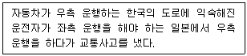
- 고의 사고(Violation)
- 숙련 기반 에러(Skill based error)
- 규칙 기반 착오(Rule based mistake)
- 지식 기반 착오(Knowledge based mistake)
(정답률: 51%)
3과목: 기계위험방지기술
41. 산업안전보건법령상 사업주가 진동 작업을 하는 근로자에게 충분히 알려야 할 사항과 거리가 가장 먼 것은?
- 인체에 미치는 영향과 증상
- 진동기계·기구 관리방법
- 보호구 선정과 착용방법
- 진동재해 시 비상연락체계
(정답률: 47%)
42. 산업안전보건법령상 크레인에 전용탑승설비를 설치하고 근로자를 달아 올린 상태에서 작업에 종사시킬 경우 근로자의 추락 위험을 방지하기 위하여 실시해야 할 조치 사항으로 적합하지 않은 것은?
- 승차석 외의 탑승 제한
- 안전대나 구명줄의 설치
- 탑승설비의 하강시 동력하강방법을 사용
- 탑승설비가 뒤집히거나 떨어지지 않도록 필요한 조치
(정답률: 52%)
43. 연삭기에서 숫돌의 바깥지름이 150mm 일 경우 평형플랜지 지름은 몇 mm 이상이어야 하는가?
- 30
- 50
- 60
- 90
(정답률: 69%)
44. 플레이너 작업시의 안전대책이 아닌 것은?
- 베드 위에 다른 물건을 올려놓지 않는다.
- 바이트는 되도록 짧게 나오도록 설치한다.
- 프레임 내의 피트(pit)에는 뚜껑을 설치한다.
- 칩 브레이커를 사용하여 칩이 길게 되도록 한다.
(정답률: 74%)
45. 양중기 과부하방지장치의 일반적인 공통사항에 대한 설명 중 부적합한 것은?
- 과부하방지장치와 타 방호장치는 기능에 서로 장애를 주지 않도록 부착할 수 있는 구조이어야 한다.
- 방호장치의 기능을 변형 또는 보수할 때 양중기의 기능도 동시에 정지할 수 있는 구조이어야 한다.
- 과부하방지장치에는 정상동작상태의 녹색램프와 과부하 시 경고 표시를 할 수 있는 붉은색램프와 경보음을 발하는 장치 등을 갖추어야 하며, 양중기 운전자가 확인할 수 있는 위치에 설치해야 한다.
- 과부하방지장치 작동 시 경보음과 경보램프가 작동되어야 하며 양중기는 작동이 되지 않아야 한다. 다만, 크레인은 과부하 상태 해지를 위하여 권상된 만큼 권하시킬 수 있다.
(정답률: 42%)
46. 산업안전보건법령상 프레스 작업시작 전 점검해야 할 사항에 해당하는 것은?
- 와이어로프가 통하고 있는 곳 및 작업장소의 지반상태
- 하역장치 및 유압장치 기능
- 권과방지장치 및 그 밖의 경보장치의 기능
- 1행정 1정지기구·급정지장치 및 비상정지 장치의 기능
(정답률: 60%)
47. 방호장치를 분류할 때는 크게 위험장소에 대한 방호장치와 위험원에 대한 방호장치로 구분할 수 있는데, 다음 중 위험장소에 대한 방호장치가 아닌 것은?
- 격리형 방호장치
- 접근거부형 방호장치
- 접근반응형 방호장치
- 포집형 방호장치
(정답률: 66%)
48. 산업안전보건법령상 목재가공용 기계에 사용되는 방호장치의 연결이 옳지 않은 것은?
- 둥근톱기계 : 톱날접촉예방장치
- 띠톱기계 : 날접촉예방장치
- 모떼기기계 : 날접촉예방장치
- 동력식 수동대패기계 : 반발예방장치
(정답률: 62%)
49. 다음 중 금속 등의 도체에 교류를 통한 코일을 접근시켰을 때, 결함이 존재하면 코일에 유기되는 전압이나 전류가 변하는 것을 이용한 검사방법은?
- 자분탐상검사
- 초음파탐상검사
- 와류탐상검사
- 침투형광탐상검사
(정답률: 64%)
50. 산업안전보건법령상에서 정한 양중기의 종류에 해당하지 않는 것은?
- 크레인[호이스트(hoist)를 포함한다]
- 도르래
- 곤돌라
- 승강기
(정답률: 55%)
51. 롤러의 급정지를 위한 방호장치를 설치하고자 한다. 앞면 롤러 직경이 36cm 이고, 분당회전속도가 50rpm이라면 급정지거리는 약 얼마 이내이어야 하는가? (단, 무부하동작에 해당한다.)
- 45cm
- 50cm
- 55cm
- 60cm
(정답률: 39%)
52. 다음 중 금형 설치·해체작업의 일반적인 안전사항으로 틀린 것은?
- 고정볼트는 고정 후 가능하면 나사산이 3~4개 정도 짧게 남겨 슬라이드 면과의 사이에 협착이 발생하지 않도록 해야 한다.
- 금형 고정용 브래킷(물림판)을 고정시킬 때 고정용 브래킷은 수평이 되게 하고, 고정볼트는 수직이 되게 고정하여야 한다.
- 금형을 설치하는 프레스의 T홈 안길이는 설치 볼트 직경 이하로 한다.
- 금형의 설치용구는 프레스의 구조에 적합한 형태로 한다.
(정답률: 63%)
53. 산업안전보건법령상 보일러에 설치하는 압력방출장치에 대하여 검사 후 봉인에 사용되는 재료에 가장 적합한 것은?
- 납
- 주석
- 구리
- 알루미늄
(정답률: 67%)
54. 슬라이드가 내려옴에 따라 손을 쳐내는 막대가 좌우로 왕복하면서 위험점으로부터 손을 보호하여 주는 프레스의 안전장치는?
- 수인식 방호장치
- 양손조작식 방호장치
- 손쳐내기식 방호장치
- 게이트 가드식 방호장치
(정답률: 72%)
55. 산업안전보건법령에 따라 사업주는 근로자가 안전하게 통행할 수 있도록 통로에 얼마 이상의 채광 또는 조명시설을 하여야 하는가?
- 50럭스
- 75럭스
- 90럭스
- 100럭스
(정답률: 66%)
56. 산업안전보건법령상 다음 중 보일러의 방호장치와 가장 거리가 먼 것은?
- 언로드밸브
- 압력방출장치
- 압력제한스위치
- 고저수위 조절장치
(정답률: 68%)
57. 다음 중 롤러기 급정지장치의 종류가 아닌 것은?
- 어깨조작식
- 손조작식
- 복부조작식
- 무릎조작식
(정답률: 67%)
58. 산업안전보건법령에 따라 레버풀러(lever puller) 또는 체인블록(chain block)을 사용하는 경우 훅의 입구(hook mouth) 간격이 제조자가 제공하는 제품사양서 기준으로 몇 % 이상 벌어진 것은 폐기하여야 하는가?
- 3
- 5
- 7
- 10
(정답률: 47%)
59. 컨베이어(conveyor) 역전방지장치의 형식을 기계식과 전기식으로 구분할 때 기계식에 해당하지 않는 것은?
- 라쳇식
- 밴드식
- 슬러스트식
- 롤러식
(정답률: 58%)
60. 다음 중 연삭숫돌의 3요소가 아닌 것은?
- 결합제
- 입자
- 저항
- 기공
(정답률: 50%)
4과목: 전기위험방지기술
61. 다음 ( ) 안의 알맞은 내용을 나타낸 것은?
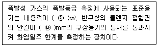
- ㉮ 600, ㉯ 0.4
- ㉮ 1800, ㉯ 0.6
- ㉮ 4500, ㉯ 8
- ㉮ 8000, ㉯ 25
(정답률: 47%)
62. 다음 차단기는 개폐기구가 절연물의 용기 내에 일체로 조립한 것으로 과부하 및 단락사고 시에 자동적으로 전로를 차단하는 장치는?
- OS
- VCB
- MCCB
- ACB
(정답률: 49%)
63. 한국전기설비규정에 따라 보호등전위본딩 도체로서 주접지단자에 접속하기 위한 등전위본딩 도체(구리도체)의 단면적은 몇 mm2 이상이어야 하는가? (단, 등전위본딩 도체는 설비 내에 있는 가장 큰 보호접지 도체 단면적의 1/2 이상의 단면적을 가지고 있다.)
- 2.5
- 6
- 16
- 50
(정답률: 37%)
64. 저압전로의 절연성능 시험에서 전로의 사용전압이 380v인 경우 전로의 전선 상호간 및 전로와 대지 사이의 절연저항은 최소 몇 MΩ 이상이어야 하는가?
- 0.1
- 0.3
- 0.5
- 1
(정답률: 40%)
65. 전격의 위험을 결정하는 주된 인자로 가장 거리가 먼 것은?
- 통전전류
- 통전시간
- 통전경로
- 접촉전압
(정답률: 58%)
66. 교류 아크용접기의 허용사용률(%)은? (단, 정격사용률은 10%, 2차 정력전류는 500A, 교류 아크용접기의 사용전류는 250A 이다.)
- 30
- 40
- 50
- 60
(정답률: 45%)
67. 내압방폭구조의 필요충분조건에 대한 사항으로 틀린 것은?
- 폭발화염이 외부로 유출되지 않을 것
- 습기침투에 대한 보호를 충분히 할 것
- 내부에서 폭발한 경우 그 압력에 견딜 것
- 외함의 표면온도가 외부의 폭발성가스를 점화되지 않을 것
(정답률: 65%)
68. 다음 중 전동기를 운전하고자 할 때 개폐기의 조작순서로 옳은 것은?
- 메인 스위치 → 분전반 스위치 → 전동기용 개폐기
- 분전반 스위치 → 메인 스위치 → 전동기용 개폐기
- 전동기용 개폐기 → 분전반 스위치 → 메인 스위치
- 분전반 스위치 → 전동기용 스위치 → 메인 스위치
(정답률: 57%)
69. 다음 빈칸에 들어갈 내용으로 알맞은 것은?
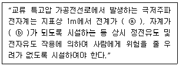
- ⓐ 0.35 kV/m 이하, ⓑ 0.833 μT 이하
- ⓐ 3.5 kV/m 이하, ⓑ 8.33 μT 이하
- ⓐ 3.5 kV/m 이하, ⓑ 83.3 μT 이하
- ⓐ 35 kV/m 이하, ⓑ 833 μT 이하
(정답률: 43%)
70. 감전사고를 방지하기 위한 방법으로 틀린 것은?
- 전기기기 및 설비의 위험부에 위험표지
- 전기설비에 대한 누전차단기 설치
- 전기기에 대한 정격표시
- 무자격자는 전기계 및 기구에 전기적인 접촉 금지
(정답률: 66%)
71. 외부피뢰시스템에서 접지극은 지표면에서 몇 m 이상 깊이로 매설하여야 하는가? (단, 동결심도는 고려하지 않는 경우이다.)
- 0.5
- 0.75
- 1
- 1.25
(정답률: 47%)
72. 정전기의 재해방지 대책이 아닌 것은?
- 부도체에는 도전성을 향상 또는 제전기를 설치 운영한다.
- 접촉 및 분리를 일으키는 기계적 작용으로 인한 정전기 발생을 적게 하기 위해서는 가능한 접촉 면적을 크게 하여야 한다.
- 저항률이 1010Ω·cm 미만의 도전성 위험물의 배관유속은 7m/s 이하로 한다.
- 생산공정에 별다른 문제가 없다면, 습도를 70%정도 유지하는 것도 무방하다.
(정답률: 52%)
73. 어떤 부도체에서 정전용량이 10pF이고, 전압이 5kV 일 때 전하량(C)은?
- 9×10-12
- 6×10-10
- 5×10-8
- 2×10-6
(정답률: 50%)
74. KS C IEC 60079-0에 따른 방폭에 대한 설명으로 틀린 것은?
- 기호 “X”는 방폭기기의 특정사용조건을 나타내는 데 사용되는 인증번호의 접미사이다.
- 인화하한(LFL)과 인화상한(UFL) 사이의 범위가 클수록 폭발성 가스 분위기 형성 가능성이 크다.
- 기기그룹에 따라 폭발성가스를 분류할 때 ⅡA의 대표 가스로 에틸렌이 있다.
- 연면거리는 두 도전부 사이의 고체 절연물 표면을 따른 최단거리를 말한다.
(정답률: 47%)
75. 다음 중 활선근접 작업시의 안전조치로 적절하지 않은 것은?
- 근로자가 절연용 방호구의 설치·해체작업을 하는 경우에는 절연용 보호구를 착용하거나 활선작업용 기구 및 장치를 사용하도록 하여야 한다.
- 저압인 경우에는 해당 전기작업자가 절연용 보호구를 착용하되, 충전전로에 접촉할 우려가 없는 경우에는 절연용 방호구를 설치하지 아니할 수 있다.
- 유자격자가 아닌 근로자가 근로자의 몸 또는 긴 도전성 물체가 방호되지 않은 충전전로에서 대지전압이 50kV 이하인 경우에는 400cm 이내로 접근할 수 없도록 하여야 한다.
- 고압 및 특별고압의 전로에서 전기작업을 하는 근로자에게 활선작업용 기구 및 장치를 사용하여야 한다.
(정답률: 44%)
76. 밸브 저항형 피뢰기의 구성요소로 옳은 것은?
- 직렬갭, 특성요소
- 병렬갭, 특성요소
- 직렬갭, 충격요소
- 병렬갭, 충격요소
(정답률: 53%)
77. 정전기 제거 방법으로 가장 거리가 먼 것은?
- 작업장 바닥을 도전처리한다.
- 설비의 도체 부분은 접지시킨다.
- 작업자는 대전방지화를 신는다.
- 작업장을 항온으로 유지한다.
(정답률: 55%)
78. 인체의 전기저항을 0.5kΩ이라고 하면 심실세동을 일으키는 위험한계 에너지는 몇 J 인가? (단, 심실세동전류값
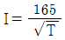
mA 의 Dalziel의 식을 이용하며, 통전시간은 1초로 한다.)- 13.6
- 12.6
- 11.6
- 10.6
(정답률: 64%)
79. 다음 중 전기설비기술기준에 따른 전압의 구분으로 틀린 것은?
- 저압 : 직류 1kV 이하
- 고압 : 교류 1kV를 초과, 7kV 이하
- 특고압 : 직류 7kV 초과
- 특고압 : 교류 7kV 초과
(정답률: 47%)
80. 가스 그룹 ⅡB 지역에 설치된 내압방폭구조 “d” 장비의 플랜지 개구부에서 장애물까지의 최소 거리(mm)는?
- 10
- 20
- 30
- 40
(정답률: 51%)
5과목: 화학설비위험방지기술
81. 다음 설명이 의미하는 것은?
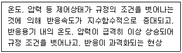
- 비등
- 과열·과압
- 폭발
- 반응폭주
(정답률: 60%)
82. 다음 중 전기화재의 종류에 해당하는 것은?
- A급
- B급
- C급
- D급
(정답률: 67%)
83. 다음 중 폭발범위에 관한 설명으로 틀린 것은?
- 상한값과 하한값이 존재한다.
- 온도에는 비례하지만 압력과는 무관하다.
- 가연성 가스의 종류에 따라 각각 다른 값을 갖는다.
- 공기와 혼합된 가연성 가스의 체적 농도로 나타낸다.
(정답률: 70%)
84. 다음 표와 같은 혼합가스의 폭발범위(vol%)로 옳은 것은?
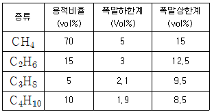
- 3.75~13.21
- 4.33~13.21
- 4.33~15.22
- 3.75~15.22
(정답률: 48%)
85. 위험물을 저장·취급하는 화학설비 및 그 부속설비를 설치할 때 '단위공정시설 및 설비로부터 다른 단위공정시설 및 설비의 사이'의 안전거리는 설비의 바깥 면으로부터 몇 m 이상이 되어야 하는가?
- 5
- 10
- 15
- 20
(정답률: 58%)
86. 열교환기의 열교환 능률을 향상시키기 위한 방법으로 거리가 먼 것은?
- 유체의 유속을 적절하게 조절한다.
- 유체의 흐르는 방향을 병류로 한다.
- 열교환기 입구와 출구의 온도차를 크게 한다.
- 열전도율이 좋은 재료를 사용한다.
(정답률: 59%)
87. 다음 중 인화성 물질이 아닌 것은?
- 디에틸에테르
- 아세톤
- 에틸알코올
- 과염소산칼륨
(정답률: 55%)
88. 산업안전보건법령상 위험물질의 종류에서 “폭발성 물질 및 유기과산화물”에 해당하는 것은?
- 리튬
- 아조화합물
- 아세틸렌
- 셀룰로이드류
(정답률: 52%)
89. 건축물 공사에 사용되고 있으나, 불에 타는 성질이 있어서 화재 시 유독한 시안화수소 가스가 발생되는 물질은?
- 염화비닐
- 염화에틸렌
- 메타크릴산메틸
- 우레탄
(정답률: 58%)
90. 반응기를 설계할 때 고려하여야 할 요인으로 가장 거리가 먼 것은?
- 부식성
- 상의 형태
- 온도 범위
- 중간생성물의 유무
(정답률: 51%)
91. 에틸알코올 1몰이 완전 연소 시 생성되는 CO2와 H2O의 몰수로 옳은 것은?
- CO2 : 1, H2O : 4
- CO2 : 2, H2O : 3
- CO2 : 3, H2O : 2
- CO2 : 4, H2O : 1
(정답률: 48%)
92. 산업안전보건법령상 각 물질이 해당하는 위험물질의 종류를 옳게 연결한 것은?
- 아세트산(농도 90%) - 부식성 산류
- 아세톤(농도 90%) - 부식성 염기류
- 이황화탄소 – 인화성 가스
- 수산화칼륨 – 인화성 가스
(정답률: 46%)
93. 물과의 반응으로 유독한 포스핀가스를 발생하는 것은?
- HCl
- NaCl
- Ca3P2
- Al(OH)3
(정답률: 58%)
94. 분진폭발의 요인을 물리적 인자와 화학적 인자로 분류할 때 화학적 인자에 해당하는 것은?
- 연소열
- 입도분포
- 열전도율
- 입자의 형성
(정답률: 40%)
95. 메탄올에 관한 설명으로 틀린 것은?
- 무색투명한 액체이다.
- 비중은 1보다 크고, 증기는 공기보다 가볍다.
- 금속나트륨과 반응하여 수소를 발생한다.
- 물에 잘 녹는다.
(정답률: 39%)
96. 다음 중 자연발화가 쉽게 일어나는 조건으로 틀린 것은?
- 주위온도가 높을수록
- 열 축적이 클수록
- 적당량의 수분이 존재할 때
- 표면적이 작을수록
(정답률: 60%)
97. 다음 중 인화점이 가장 낮은 것은?
- 벤젠
- 메탄올
- 이황화탄소
- 경유
(정답률: 53%)
98. 자연발화성을 가진 물질이 자연발화를 일으키는 원인으로 거리가 먼 것은?
- 분해열
- 증발열
- 산화열
- 중합열
(정답률: 37%)
99. 비점이 낮은 가연성 액체 저장탱크 주위에 화재가 발생했을 때 저장탱크 내부의 비등현상으로 인한 압력 상승으로 탱크가 파열되어 그 내용물이 증발, 팽창하면서 발생되는 폭발현상은?
- Back Draft
- BLEVE
- Flash Over
- UVCE
(정답률: 59%)
100. 사업주는 산업안전보건법령에서 정한 설비에 대해서는 과압에 따른 폭발을 방지하기 위하여 안전밸브 등을 설치하여야 한다. 다음 중 이에 해당하는 설비가 아닌 것은?
- 원심펌프
- 정변위 압축기
- 정변위 펌프(토출축에 차단밸브가 설치된 것만 해당한다)
- 배관(2개 이상의 밸브에 의하여 차단되어 대기온도에서 액체의 열팽창에 의하여 파열될 우려가 있는 것으로 한정한다)
(정답률: 53%)
6과목: 건설안전기술
101. 유해·위험방지계획서 제출 시 첨부서류로 옳지 않은 것은?
- 공사현장의 주변 현황 및 주변과의 관계를 나타내는 도면
- 공사개요서
- 전체공정표
- 작업인부의 배치를 나타내는 도면 및 서류
(정답률: 50%)
102. 거푸집 해체작업 시 유의사항으로 옳지 않은 것은?
- 일반적으로 수평부재의 거푸집은 연직부재의 거푸집보다 빨리 떼어낸다.
- 해체된 거푸집이나 각목 등에 박혀있는 못 또는 날카로운 돌출물은 즉시 제거하여야 한다.
- 상하 동시 작업은 원칙적으로 금지하여 부득이한 경우에는 긴밀히 연락을 위하며 작업을 하여야 한다.
- 거푸집 해체작업장 주위에는 관계자를 제외하고는 출입을 금지시켜야 한다.
(정답률: 56%)
103. 사다리식 통로 등을 설치하는 경우 통로 구조로서 옳지 않은 것은?
- 발판의 간격은 일정하게 한다.
- 발판과 벽과의 사이는 15 cm 이상의 간격을 유지한다.
- 사다리의 상단은 걸쳐놓은 지점으로부터 60cm 이상 올라가도록 한다.
- 폭은 40cm 이상으로 한다.
(정답률: 49%)
104. 추락 재해방지 설비 중 근로자의 추락재해를 방지 할 수 있는 설비로 작업발판 설치가 곤란한 경우에 필요한 설비는?
- 경사로
- 추락방호망
- 고장사다리
- 달비계
(정답률: 64%)
1⑤. 콘크리트 타설작업을 하는 경우에 준수해야할 사항으로 옳지 않은 것은?
- 당일의 작업을 시작하기 전에 해당 작업에 관한 거푸집동바리 등의 변형·변위 및 지반의 침하 유무 등을 점검하고 이상이 있으면 보수한다.
- 작업 중에는 거푸집동바리 등의 변형·변위 및 침하 유무 등을 감시할 수 있는 감시자를 배치하여 이상이 있으면 작업을 빠른 시간 내 우선 완료하고 근로자를 대피시킨다.
- 콘크리트 타설작업 시 거푸집붕괴의 위험이 발생할 우려가 있으면 충분한 보강조치를 한다.
- 콘크리트를 타설하는 경우에는 편심이 발생하지 않도록 골고루 분산하여 타설한다.
(정답률: 69%)
106. 작업장 출입구 설치 시 준수해야 할 사항으로 옳지 않은 것은?
- 출입구의 위치·수 및 크기가 작업장의 용도와 특성에 맞도록 한다.
- 출입구에 문을 설치하는 경우에는 근로자가 쉽게 열고 닫을 수 있도록 한다.
- 주된 목적이 하역운반기계용인 출입구에는 보행자용 출입구를 따로 설치하지 않는다.
- 계단이 출입구와 바로 연결된 경우에는 작업자의 안전한 통행을 위하여 그 사이에 1.2m 이상 거리를 두거나 안내표지 또는 비상벨 등을 설치한다.
(정답률: 66%)
107. 건설작업장에서 근로자가 상시 작업하는 장소의 작업면 조도기준으로 옳지 않은 것은? (단, 갱내 작업장과 감광재료를 취급하는 작업장의 경우는 제외)
- 초정밀작업 : 600럭스(lux) 이상
- 정밀작업 : 300럭스(lux) 이상
- 보통작업 : 150럭스(lux) 이상
- 초정밀, 정밀, 보통작업을 제외한 기타 작업 : 75럭스(lux) 이상
(정답률: 61%)
108. 건설업 산업안전보건관리비 계상 및 사용기준에 따른 안전관리비의 개인보호구 및 안전장구 구입비 항목에서 안전관리비로 사용이 가능한 경우는?
- 안전·보건관리자가 선임되지 않은 현장에서 안전·보건업무를 담당하는 현장관계자용 무전기, 카메라, 컴퓨터, 프린터 등 업무용 기기
- 혹한·혹서에 장기간 노출로 인해 건강장해를 일으킬 우려가 있는 경우 특정 근로자에게 지급되는 기능성 보호 장구
- 근로자에게 일률적으로 지급하는 보냉·보온장구
- 감리원이나 외부에서 방문하는 인사에게 지급하는 보호구
(정답률: 60%)
109. 옥외에 설치되어 있는 주행크레인에 대하여 이탈방지장치를 작동시키는 등 그 이탈을 방지하기 위한 조치를 하여야 하는 순간풍속에 대한 기준으로 옳은 것은?
- 순간풍속이 초당 10m를 초과하는 바람이 불어올 우려가 있는 경우
- 순간풍속이 초당 20m를 초과하는 바람이 불어올 우려가 있는 경우
- 순간풍속이 초당 30m를 초과하는 바람이 불어올 우려가 있는 경우
- 순간풍속이 초당 40m를 초과하는 바람이 불어올 우려가 있는 경우
(정답률: 47%)
110. 지반 등의 굴착작업 시 연암의 굴착면 기울기로 옳은 것은?
- 1 : 0.3
- 1 : 0.5
- 1 : 0.8
- 1 : 1.0
(정답률: 44%)
111. 철골작업 시 철골부재에서 근로자가 수직방향으로 이동하는 경우엔 설치하여야 하는 고정된 승강로의 최대 답단 간격은 얼마 이내인가?
- 20cm
- 25cm
- 30cm
- 40cm
(정답률: 46%)
112. 흙막이벽 근입깊이를 깊게하고, 전면의 굴착부분을 남겨두어 흙의 중량으로 대항하게 하거나, 굴착예정부분의 일부를 미리 굴착하여 기초콘크리트를 타설하는 등의 대책과 가장 관계가 깊은 것은?
- 파이핑현상이 있을 때
- 히빙현상이 있을 때
- 지하수위가 높을 때
- 굴착깊이가 깊을 때
(정답률: 53%)
113. 재해사고를 방지하기 위하여 크레인에 설치된 방호장치로 옳지 않은 것은?
- 공기정화장치
- 비상정지장치
- 제동장치
- 권과방지장치
(정답률: 68%)
114. 가설구조물의 문제점으로 옳지 않은 것은?
- 도괴재해의 가능성이 크다.
- 추락재해 가능성이 크다.
- 부재의 결합이 간단하나 연결부가 견고하다.
- 구조물이라는 통상의 개념이 확고하지 않으며 조립의 정밀도가 낮다.
(정답률: 61%)
115. 강관틀비계를 조립하여 사용하는 경우 준수해야할 기준으로 옳지 않은 것은?
- 수직방향으로 6m, 수평방향으로 8m 이내마다 벽이음을 할 것
- 높이가 20m를 초과하거나 중량물의 적재를 수반하는 작업을 할 경우에는 주틀 간의 간격을 2.4m 이하로 할 것
- 길이가 띠장 방향으로 4m 이하이고 높이가 10m를 초과하는 경우에는 10m 이내마다 띠장 방향으로 버팀기둥을 설치할 것
- 주틀 간에 교차 가새를 설치하고 최상층 및 5층 이내마다 수평재를 설치할 것
(정답률: 44%)
116. 비계의 높이가 2m 이상인 작업장소에 작업발판을 설치할 경우 준수하여야 할 기준으로 옳지 않은 것은?
- 작업발판의 폭은 30cm 이상으로 한다.
- 발판재료간의 틈은 3cm 이하로 한다.
- 추락의 위험성이 있는 장소에는 안전난간을 설치한다.
- 발판재료는 뒤집히거나 떨어지지 않도록 2개 이상의 지지물에 연결하거나 고정시킨다.
(정답률: 55%)
117. 사면지반 개량공법으로 옳지 않은 것은?
- 전기 화학적 공법
- 석회 안정처리 공법
- 이온 교환 방법
- 옹벽 공법
(정답률: 36%)
118. 법면 붕괴에 의한 재해 예방조치로서 옳은 것은?
- 지표수와 지하수의 침투를 방지한다.
- 법면의 경사를 증가한다.
- 절토 및 성토높이를 증가한다.
- 토질의 상태에 관계없이 구배조건을 일정하게 한다.
(정답률: 51%)
119. 취급·운반의 원칙으로 옳지 않은 것은?
- 운반 작업을 집중하여 시킬 것
- 생산을 최고로 하는 운반을 생각할 것
- 곡선 운반을 할 것
- 연속 운반을 할 것
(정답률: 58%)
120. 가설통로의 설치기준으로 옳지 않은 것은?
- 경사가 15°를 초과하는 때에는 미끄러지지 않는 구조로 한다.
- 건설공사에 사용하는 높이 8m 이상인 비계다리에는 7m 이내마다 계단참을 설치한다.
- 수직갱에 가설된 통로의 길이가 15m 이상일 경우에는 15m 이내 마다 계단참을 설치한다.
- 추락의 위험이 있는 장소에는 안전난간을 설치한다.
(정답률: 65%)